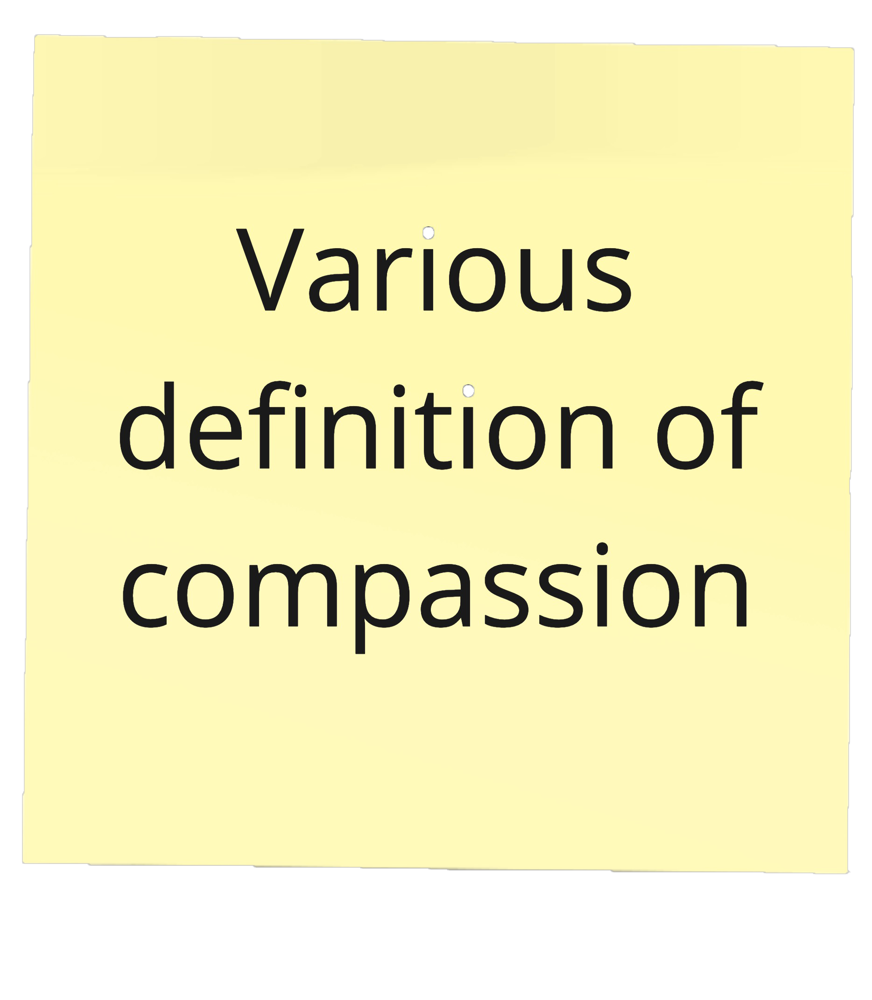
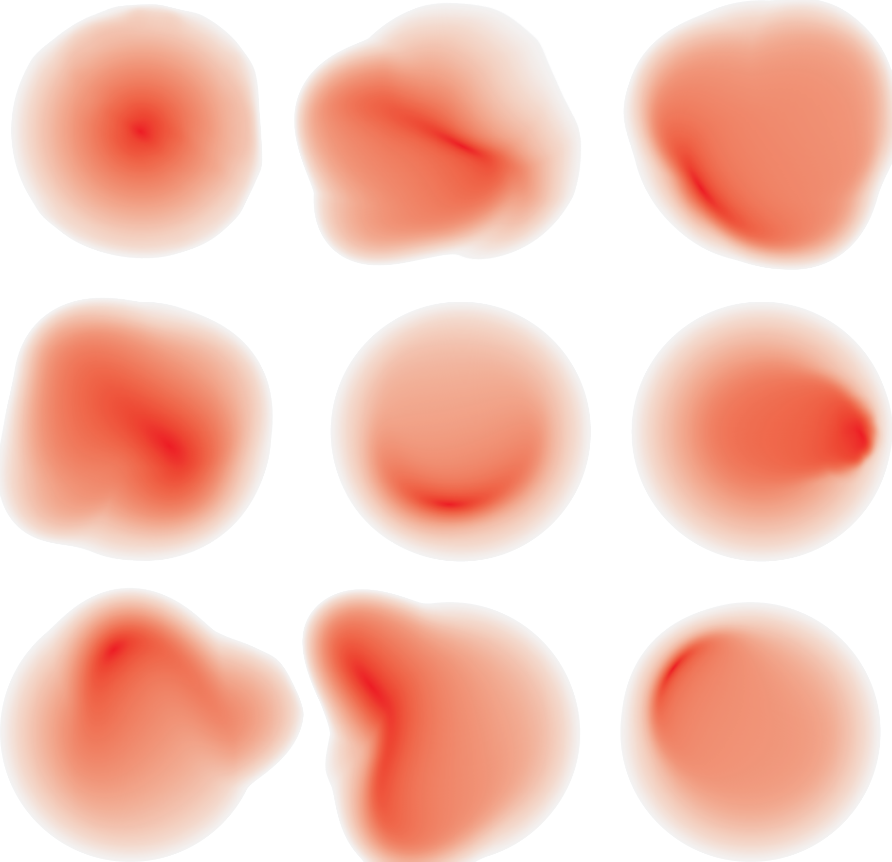
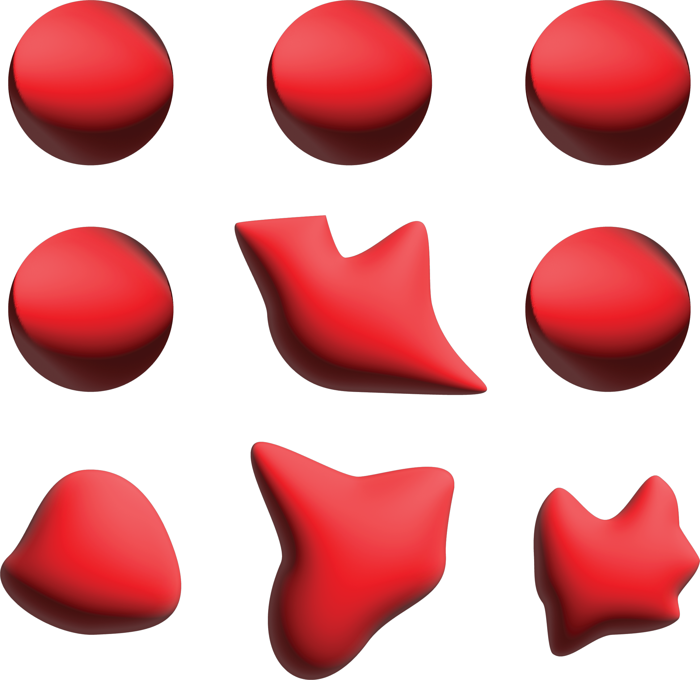
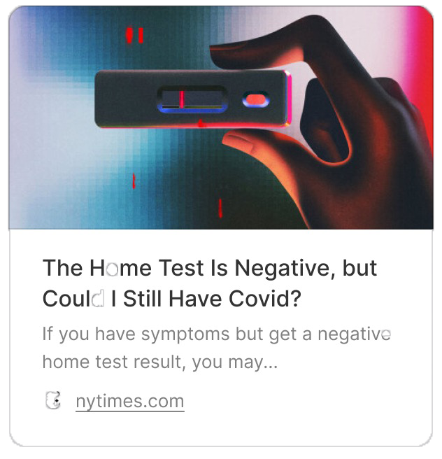
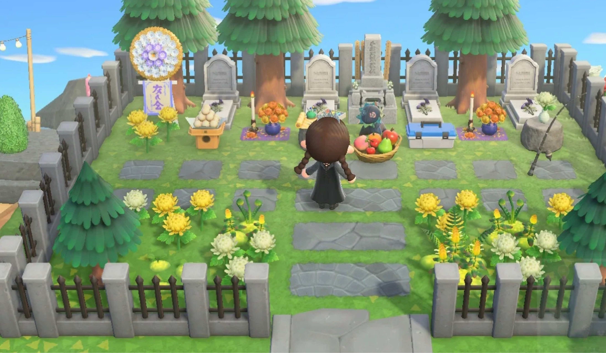
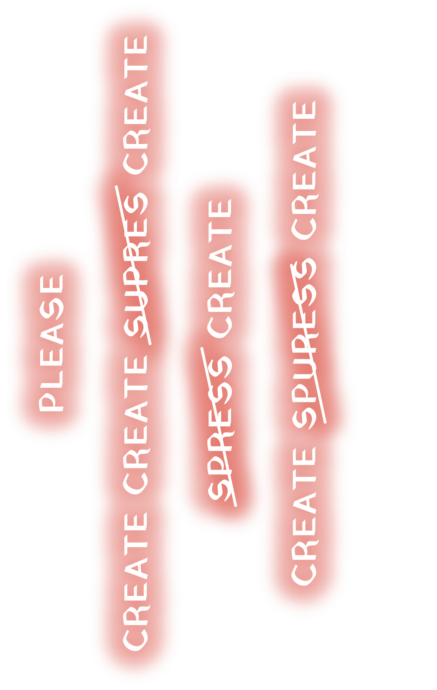

Being Futuristic



Typically brainstorming refers to pre-design and pre-research stages, gathering irrelevant information or ideas in mind.
mind is free, but rational
br
instorm
A
a digital whiteboard (Miro/ FigmaJam)
the design practice / method that I developed over the course of self-teaching UX Design.


my current favorite design practice
because it is all about being imaginary while being not responsible.